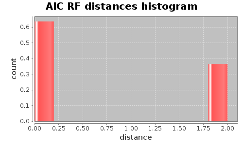
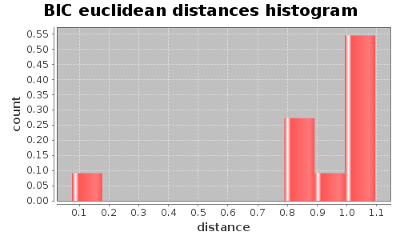

Application Meta
jModeltest 2.1
(c) 2011-onwards D. Darriba, G.L. Taboada, R. Doallo and D. Posada,(1) Department of Biochemistry, Genetics and Immunology
University of Vigo, 36310 Vigo, Spain.
(2) Department of Electronics and Systems
University of A Coruna, 15071 A Coruna, Spain.
e-mail: ddarriba@udc.es, dposada@uvigo.es
Mon May 13 01:54:39 EDT 2013
Linux 3.8.0-19-generic, arch: amd64, bits: 64, numcores: 4
| Citation: | Darriba D, Taboada GL, Doallo R and Posada D. 2012. "jModelTest 2: more models, new heuristics and parallel computing". Nature Methods 9, 772. |
 Back to top
Back to top Settings
Arguments = -d aligned.fasta -g 4 -f -AIC -BIC -a -S BESTInput Alignment: "aligned.fasta"
NumTaxa = 10
Length = 705
Phyml version = 3.0
Phyml binary = PhyML_3.0_linux64
Candidate models = 12
number of substitution schemes = 3
including models with equal/unequal base frequencies (+F)
including only models without a proportion of invariable sites
including models with/without rate variation among sites (+G) (nCat = 4)
Optimized free parameters (K) = Substitution parameters + 17 branch lengths + topology
Base tree for likelihood calculations = Maximum Likelihood
Tree topology search operation = Best of {NNI, SPR}
Model Optimization Results
| ID | Name | Partition | -lnL | p | fA | fC | fG | fT | ti/tv | R(a) | R(b) | R(c) | R(d) | R(e) | R(f) | p-inv | shape |
|---|---|---|---|---|---|---|---|---|---|---|---|---|---|---|---|---|---|
| 1 | JC | 000000 | 5194.8495 | 18 | - | - | - | - | - | - | - | - | - | - | - | - | - |
| 2 | JC+G | 000000 | 4952.9965 | 19 | - | - | - | - | - | - | - | - | - | - | - | - | 0.4880 |
| 3 | F81 | 000000 | 5128.2295 | 21 | 0.2678 | 0.2966 | 0.1417 | 0.2939 | - | - | - | - | - | - | - | - | - |
| 4 | F81+G | 000000 | 4858.7305 | 22 | 0.2902 | 0.3129 | 0.1262 | 0.2708 | - | - | - | - | - | - | - | - | 0.4390 |
| 5 | K80 | 010010 | 5121.6134 | 19 | - | - | - | - | 1.1839 | - | - | - | - | - | - | - | - |
| 6 | K80+G | 010010 | 4860.9616 | 20 | - | - | - | - | 1.5772 | - | - | - | - | - | - | - | 0.4420 |
| 7 | HKY | 010010 | 5044.7358 | 22 | 0.2858 | 0.2947 | 0.1345 | 0.2851 | 1.2656 | - | - | - | - | - | - | - | - |
| 8 | HKY+G | 010010 | 4711.5084 | 23 | 0.3474 | 0.3060 | 0.1020 | 0.2446 | 2.9857 | - | - | - | - | - | - | - | 0.2890 |
| 9 | SYM | 012345 | 5003.5162 | 23 | - | - | - | - | - | 7.3040 | 6.6375 | 5.1292 | 0.9750 | 12.5664 | 1.0000 | - | - |
| 10 | SYM+G | 012345 | 4756.6891 | 24 | - | - | - | - | - | 5.5905 | 5.0027 | 3.9206 | 0.4172 | 17.8043 | 1.0000 | - | 0.4360 |
| 11 | GTR | 012345 | 4988.3946 | 26 | 0.2631 | 0.2713 | 0.1780 | 0.2876 | - | 5.8502 | 7.1266 | 3.9302 | 1.0380 | 9.5595 | 1.0000 | - | - |
| 12 | GTR+G | 012345 | 4706.4037 | 27 | 0.3557 | 0.2979 | 0.1180 | 0.2284 | - | 0.9121 | 3.8248 | 1.2358 | 0.4224 | 8.7211 | 1.0000 | - | 0.2910 |
There are 2 different topologies. The following table shows the models supporting each topology and the rank according to each Information Criterion, as well as Robinson-Foulds and Euclidean distances with the tree of the best-fit model.
| ID | Models | Topology | AIC | BIC | AICc | DT | |
|---|---|---|---|---|---|---|---|
| 0 |
JC+G F81+G K80 K80+G HKY HKY+G SYM+G GTR+G
|
RANK | 0 | 0 | - | - | |
| Weight | 1.0000 | 1.0000 | - | - | |||
| RF | 0 | 0 | - | - | |||
| AVG Distance | 7.5281e-01 | 7.0726e-01 | - | - | |||
| Distance VAR | 1.7947e-01 | 1.5841e-01 | - | - | |||
| 1 |
JC F81 SYM GTR
|
RANK | 1 | 1 | - | - | |
| Weight | 0.0000 | 0.0000 | - | - | |||
| RF | 2 | 2 | - | - | |||
| AVG Distance | 1.1434e+00 | 1.0822e+00 | - | - | |||
| Distance VAR | 5.8309e-05 | 5.8483e-05 | - | - |
AIC Selection Results
Model selected
| Model | GTR+G | ||
|---|---|---|---|
| partition | 012345 | ||
| -lnL | 4706.4037 | ||
| K | 27 | ||
| freqA | 0.3557 | R(a) | 0.9121 |
| freqC | 0.2979 | R(b) | 3.8248 |
| freqG | 0.1180 | R(c) | 1.2358 |
| freqT | 0.2284 | R(d) | 0.4224 |
| ti/tv | - | R(e) | 8.7211 |
| R(f) | 1.0000 | ||
| p-inv | - | gamma | 0.2910 |
Best model tree
(Carp:0.22688984,Loach:0.33057131,(Frog:0.33439309,(Chicken:0.94593983,(Human:0.88119612,((Mouse:0.17650178,Rat:0.15441465):0.22304813,(Whale:0.20671642,(Cow:0.19379768,Seal:0.32847503):0.05863805):0.07331635):0.18928706):0.31437632):0.07923053):0.27543086);
Display best model tree in PhyloWidget
| Model | -lnL | K | AIC | delta | weight | cumWeight |
|---|---|---|---|---|---|---|
| GTR+G | 4706.4037 | 27 | 9466.8075 | 0.0000 | 0.7511 | 0.7511 |
| HKY+G | 4711.5084 | 23 | 9469.0168 | 2.2093 | 0.2489 | 1.0000 |
| SYM+G | 4756.6891 | 24 | 9561.3782 | 94.5707 | 0.0000 | 1.0000 |
| F81+G | 4858.7305 | 22 | 9761.4609 | 294.6534 | 0.0000 | 1.0000 |
| K80+G | 4860.9616 | 20 | 9761.9232 | 295.1157 | 0.0000 | 1.0000 |
| JC+G | 4952.9965 | 19 | 9943.9930 | 477.1855 | 0.0000 | 1.0000 |
| GTR | 4988.3946 | 26 | 10028.7893 | 561.9818 | 0.0000 | 1.0000 |
| SYM | 5003.5162 | 23 | 10053.0324 | 586.2249 | 0.0000 | 1.0000 |
| HKY | 5044.7358 | 22 | 10133.4715 | 666.6640 | 0.0000 | 1.0000 |
| K80 | 5121.6134 | 19 | 10281.2269 | 814.4194 | 0.0000 | 1.0000 |
| F81 | 5128.2295 | 21 | 10298.4590 | 831.6515 | 0.0000 | 1.0000 |
| JC | 5194.8495 | 18 | 10425.6990 | 958.8915 | 0.0000 | 1.0000 |
| -lnL: | negative log likelihod |
| K: | number of estimated parameters |
| AIC: | Akaike Information Criterion |
| delta: | AIC difference |
| weight: | AIC weight |
| cumWeight: | cumulative AIC weight |
Confidence interval
There are 12 models in the 100.00% confidence interval:
GTR+G HKY+G SYM+G F81+G K80+G JC+G GTR SYM HKY K80 F81 JC
Euclidean distances histogram from each model optimized tree to GTR+G tree.

Robinson-Foulds distances histogram from the different topologies to GTR+G topology.
Robinson-Foulds distances histogram from the different topologies to GTR+G topology.
Model Averaged Phylogeny
| Selection criterion | AIC |
|---|---|
| Confidence interval | 100.00% |
| Consensus type | 50% majority rule |
(Carp:0.226890,Loach:0.330571,(Frog:0.334393,(Chicken:0.945940,(Human:0.881196,((Whale:0.206716,(Cow:0.193798,Seal:0.328475)1.00:0.058638)1.00:0.073316,(Mouse:0.176502,Rat:0.154415)1.00:0.223048)1.00:0.189287)1.00:0.314376)1.00:0.079231)1.00:0.275431);
Display consensus tree in PhyloWidget
BIC Selection Results
Model selected
| Model | HKY+G | ||
|---|---|---|---|
| partition | 010010 | ||
| -lnL | 4711.5084 | ||
| K | 23 | ||
| freqA | 0.3474 | R(a) | - |
| freqC | 0.3060 | R(b) | - |
| freqG | 0.1020 | R(c) | - |
| freqT | 0.2446 | R(d) | - |
| ti/tv | 2.9857 | R(e) | - |
| R(f) | - | ||
| p-inv | - | gamma | 0.2890 |
Best model tree
(Carp:0.20586217,Loach:0.31652551,(Frog:0.32622111,(Chicken:0.88587052,(Human:0.85864484,((Mouse:0.17523524,Rat:0.15649668):0.23622855,(Whale:0.20892172,(Cow:0.17917932,Seal:0.31601071):0.05681077):0.07011193):0.17416012):0.31839301):0.07564080):0.26915734);
Display best model tree in PhyloWidget
| Model | -lnL | K | BIC | delta | weight | cumWeight |
|---|---|---|---|---|---|---|
| HKY+G | 4711.5084 | 23 | 9573.8553 | 0.0000 | 0.9997 | 0.9997 |
| GTR+G | 4706.4037 | 27 | 9589.8788 | 16.0235 | 0.0003 | 1.0000 |
| SYM+G | 4756.6891 | 24 | 9670.7749 | 96.9196 | 0.0000 | 1.0000 |
| K80+G | 4860.9616 | 20 | 9853.0872 | 279.2318 | 0.0000 | 1.0000 |
| F81+G | 4858.7305 | 22 | 9861.7413 | 287.8859 | 0.0000 | 1.0000 |
| JC+G | 4952.9965 | 19 | 10030.5988 | 456.7434 | 0.0000 | 1.0000 |
| GTR | 4988.3946 | 26 | 10147.3024 | 573.4471 | 0.0000 | 1.0000 |
| SYM | 5003.5162 | 23 | 10157.8709 | 584.0156 | 0.0000 | 1.0000 |
| HKY | 5044.7358 | 22 | 10233.7519 | 659.8965 | 0.0000 | 1.0000 |
| K80 | 5121.6134 | 19 | 10367.8326 | 793.9773 | 0.0000 | 1.0000 |
| F81 | 5128.2295 | 21 | 10394.1811 | 820.3258 | 0.0000 | 1.0000 |
| JC | 5194.8495 | 18 | 10507.7466 | 933.8912 | 0.0000 | 1.0000 |
| -lnL: | negative log likelihod |
| K: | number of estimated parameters |
| BIC: | Bayesian Information Criterion |
| delta: | BIC difference |
| weight: | BIC weight |
| cumWeight: | cumulative BIC weight |
Confidence interval
There are 12 models in the 100.00% confidence interval:
HKY+G GTR+G SYM+G K80+G F81+G JC+G GTR SYM HKY K80 F81 JC

Euclidean distances histogram from each model optimized tree to HKY+G tree.
Euclidean distances histogram from each model optimized tree to HKY+G tree.
Robinson-Foulds distances histogram from the different topologies to HKY+G topology.
Model Averaged Phylogeny
| Selection criterion | BIC |
|---|---|
| Confidence interval | 100.00% |
| Consensus type | 50% majority rule |
(Carp:0.205862,Loach:0.316526,(Frog:0.326221,(Chicken:0.885871,(Human:0.858645,((Whale:0.208922,(Cow:0.179179,Seal:0.316011)1.00:0.056811)1.00:0.070112,(Mouse:0.175235,Rat:0.156497)1.00:0.236229)1.00:0.174160)1.00:0.318393)1.00:0.075641)1.00:0.269157);
Display consensus tree in PhyloWidget